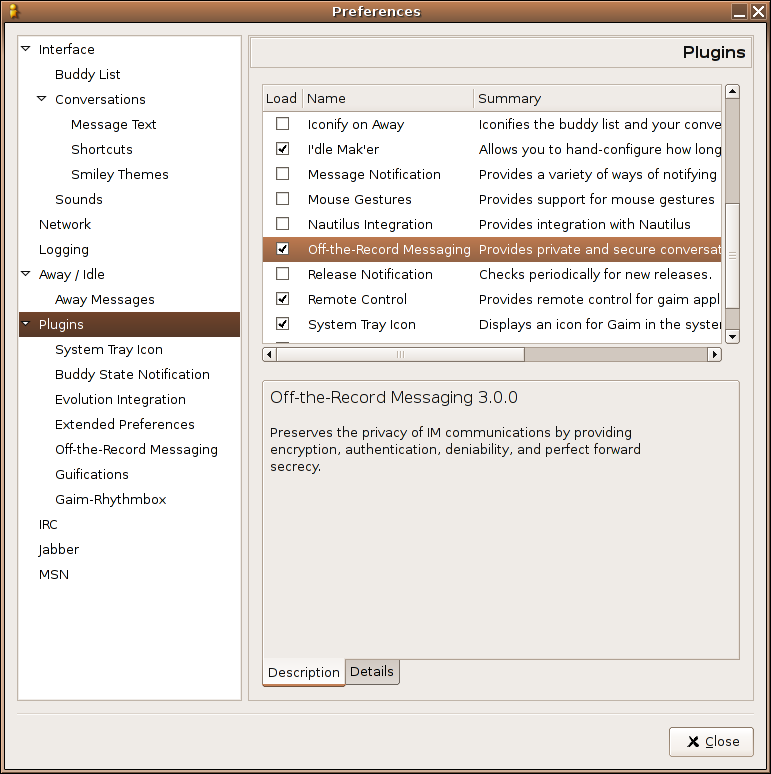
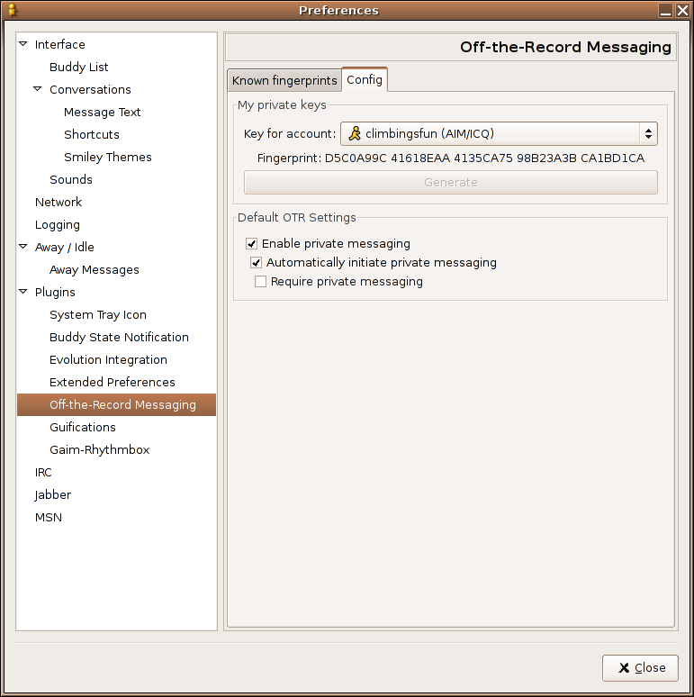
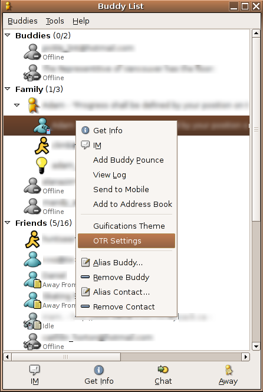
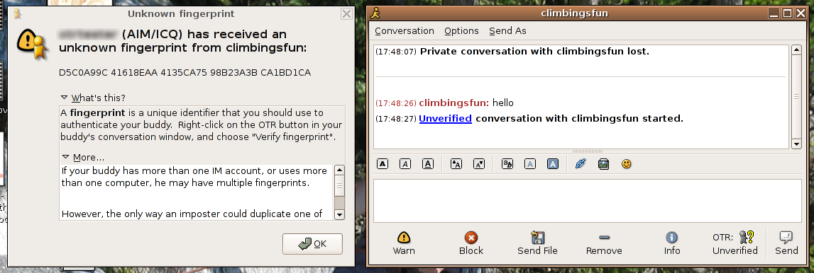
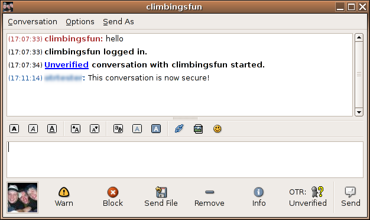
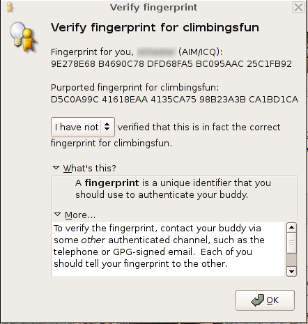
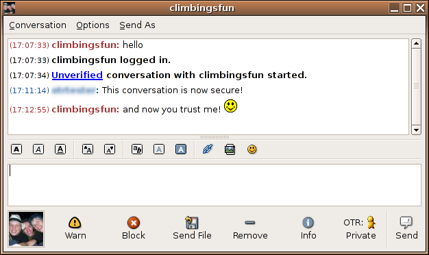

These steps should also work on other Debian based distributions (although, installation may differ slightly, as there may be updated packages from the distributor). There are 4 steps you need to perform to get set up.
You will need to have gaim installed before you begin.
First of all, you need to get the .tar.gz (source) files for libotr and gaim-otr. You can download them from the main OTR site. You do not need the otrproxy file. Make sure gaim is closed for this step. Open a terminal, and install the two components by typing:
tar xzf libotr-3.0.0.tar.gz cd libotr-3.0.0 ./configure --prefix=/usr && make && sudo make install
for libotr, and
tar xzf gaim-otr-3.0.0.tar.gz cd gaim-otr-3.0.0 ./configure --prefix=/usr && make && sudo make install
for gaim-otr.
If you do not have sudo installed, you can substitute
su -c "make install"
instead of
sudo
Make sure to replace the version number with that of the files you have downloaded.
Start gaim. Click on Tools --> Preferences. Choose "Plugins" from the left panel. Find the plugin in the right panel titled "Off-the-Record Messaging. Click on the check box to enable it.

[Note: This step is optional. If you don't generate keys in this way, they will be generated automatically when needed.]
Now, open the preferences for the OTR plugin. You may need to
expand the plugins arrow. Click on the "Config" tab. Click the
"Generate" button. If you have more than one account set up, you can
select another account and generate a key-pair for that as well. Here
you can also set up whether or not to automatically use OTR.

If you do not want OTR to attempt to set up a private connection with
certain contacts, you can edit the options for that contact.

Now, all you have to do is start talking to someone who has OTR. The
first time you talk to them, you will see a dialog explaining that you have received a new fingerprint from them. A fingerprint is a string of letters and numbers which uniquely identify a key.

Notice the button which says "OTR: Unverified" in the conversation window. This means your conversation is private, but that you have not verified the identity of your contact. You can verify the fingerprint by right-clicking on the OTR button and choosing "Verify fingerprint".

Once you have verified the identity of the fingerprint's owner, the button's text will change to "OTR: Private".


If the button says "OTR: Not private" and you wish to use OTR with this contact, simply press the button.